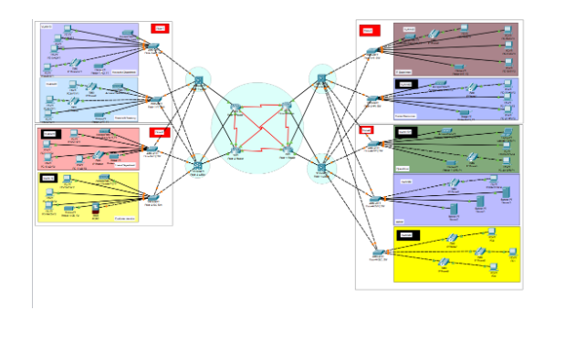

01 / NETWORKINGBanking Network
Banking Network
Infrastructure Design
A secure banking network concept connecting multiple departments and branches. VLANs separate Accounts, Finance, HR, IT, and Customer Service, with redundant routers and switches in a core mesh topology and firewalls protecting against external threats.